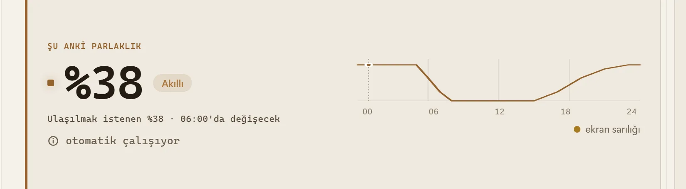

Windows · tepsi uygulaması
Ekranınız odanın ışığını ölçer.
Kamera birkaç kare okur, ortalama parlaklığı ve tonu çıkarır. Parlaklık, sıcak ton ve OpenCode teması bu ölçüme göre ayarlanır. Oyun, video, PDF ve kilit ekranında hiçbir şeye dokunmaz.
Varsayılan ayarlarla hesaplanır: şiddet tavanı %70, gece en fazla %62.
- Kamera görüntüsü diske yazılmaz
- Hesap açılmaz
- Telemetri yok
- GPL-3.0
Şafak
Perde aralanırken ekran parlar.
Ortam ışığı düşükken parlaklık düşük kalır. Işık arttıkça tur başına en fazla 8 puan yükselir; ekran bir anda patlamaz.
- Parlaklık hedefi ışık ölçümüne göre kayar: karanlıkta 6 puan aşağı, aydınlıkta 4 puan yukarı.
- Karanlıkta sıcak ton da artar; şafakta eğri %39 şiddet verir.
- Tur dakikada bir koşar, kamera en fazla 5 dakikada bir açılır.

Öğlen
Gündüz en net hâlinde.
Öğlen eğrisi sıfıra iner: sıcak ton kapanır, renkler 6500 K'de kalır. Parlaklık gündüz tavanına yaklaşır.
- Otomatik seçimde ölçülüp FAIL çıkan tema uygulanmaz; elle seçmek serbest.
- Kontrast oranı WCAG 2.1 ile hesaplanır: 7 üstü çok iyi, 4.5 iyi, 3 sınır.
- Eşik Ayarlar'dan kapatılabilir; varsayılan açık.

Akşam
Ton ısınmaya başlar.
Akşam eğrisi tırmanır: 18:00'de %27, 21:00'de %55 şiddet. Ekran kararmadan renkler sıcak tonlara kayar.
- Şiddet tavanı %70; gece en fazla %62 uygulanır.
- Kelvin 6500'den 3000'e kadar iner, 100'lük adımlarla.
- Sıcak ton kapatılınca öğrenilen renk dengesi geri gelir.

Gece
Gece tavanı devreye girer.
23:00'te eğri %88'e çıkar, tavanla %62 uygulanır. Ekran karanlık ama okunur kalır.
- Boşta 10 dakikada hedef 15 puan, 30 dakikada 25 puan düşer; geri dönüş ~3,5 saniyelik rampayla olur.
- 20-20-20 uyarısı tek seferliktir: "Baktım" ya da "Ertele" ile kapanır, kendini tekrarlamaz.
- Harici monitörün parlaklığı DDC/CI ile ayrı ayrı okunur ve yazılır.

Neye dokunmaz
Kurallar her durumda önde gelir; bağlı profil bile bunları ezemez.
Dokunur
- Duraklatma yoksa ve ekran açıksa parlaklığı ayarlar.
- Sarılık kapalıysa renk dengesine dokunmaz.
- Bir monitör DDC/CI'yi reddederse o monitörü atlar, diğerlerini sürer.
Dokunmaz
- Oyun öndeyse tur dondurulur.
- Video oynatıcı öndeyse tur dondurulur.
- Tam ekran bir uygulama listedeyse devam eder, değilse durur.
- PDF okuyucu öndeyse dondurulur.
- Ekran kilitliyken hiçbir şey yazılmaz.
Yedi şey yapar
Hepsi aynı turda, dakikada bir. Ayrı bir servis, ayrı bir süreç yok.
-
Kamera ile ortam ışığı
Kare başına yalnız ortalama parlaklık ve ton çıkarılır; görüntü diske yazılmaz. Kamera meşgulse saat moduna düşer.
-
Saat eğrisi ve gece tavanı
Şiddet 11 çapa noktasıyla hesaplanır; 23:00'te tepe %88, tavanla %62 uygulanır.
-
Sıcak ton
6500 K'den 3000 K'ye kadar, 100 K adımlarla. Ekranı karartmadan renkleri kaydırır.
-
Kontrast kapısı
Tema dosyaları WCAG 2.1 ile ölçülür; FAIL çıkan tema otomatik seçimde uygulanmaz.
-
Profiller
Ücretsizde 3, Pro'da 6 profil. Bir profili exe adına bağlayabilirsin; o uygulama öne gelince ayarlar profilden okunur.
-
Harici monitörler
Dahili panel WMI, harici ekran DDC/CI ile okunur. Yazma yalnız Pro lisansla açılır.
-
20-20-20 ve boşta dönüşü
Her 20 dakikada bir uyarı; onaylanana kadar tekrarlamaz. Boşta parlaklık düşer, dönüşte 3,5 saniyede geri gelir.
Kurulum gerçekleri
- Kurulum
- NSIS setup, x64, kullanıcı kapsamı. Yönetici izni istemez.
- İmza
- Authenticode imzası yok. SmartScreen "bilinmeyen yayıncı" uyarabilir; "Ek bilgi → Yine de çalıştır" gerekir.
- Bütünlük
- Her sürümde .sha256 var: Get-FileHash ile doğrula.
- Güncelleme
- Uygulama içi; paket minisign ile imzalı ve indirmede doğrulanır.
- Gizlilik
- Kamera görüntüsü yazılmaz, ağa gitmez. Telemetri ve hesap yok.
- Lisans
- Ücretsiz sürüm tam çalışır. Pro çevrimdışı Ed25519 anahtarıyla açılır.
Ücretsiz ve Pro
Ücretsiz sürüm kısıtlı süre değil, tam bir uygulama. Pro ekran sayısını ve profil sayısını açar.
Ücretsiz
- Işığa ve saate göre parlaklık
- Otomatik sıcak ton ve gece tavanı
- OpenCode teması ve Windows sistem teması
- 3 profil
- Kontrast kapısı
- 20-20-20 hatırlatması
Pro
- 6 profil
- Harici monitör parlaklığı (DDC/CI)
- Harici monitöre sıcak ton
- Uygulamaya bağlı profil ve uygulama başına tema
Pro fiyatı henüz belirlenmedi. Uygulamadaki "Pro'yu al" düğmesi şimdilik proje sayfasına gider.
Sık sorulanlar
Kamera ne görüyor, nereye gidiyor?
Her ölçümde birkaç kare okunur ve yalnız ortalama parlaklık ile ton çıkarılır. Görüntü diske yazılmaz, ağa gönderilmez. Kare kaydı yoktur.
Pili ne kadar tüketiyor?
Tur dakikada bir koşar ama kamera en fazla 5 dakikada bir açılır. Pil düştükçe aralık uzar: %30 altında 5 dakika, %20 altında 10, %10 altında 20, altında 30 dakika.
HDR açıkken parlaklık neden çalışmıyor?
Bazı monitörler HDR açıkken DDC/CI parlaklığını reddeder. Uygulama bunu hata metninde söyler; HDR'ı kapatmak genelde çözer.
Harici monitörüm listede ama ayar dönmüyor?
DDC/CI monitörün OSD menüsünden kapalı olabilir ya da kabloda taşınmıyor olabilir. Ücretsiz sürümde yazma kapalıdır; okuma ve listeleme açıktır.
Oyun oynarken ekranı değiştirir mi?
Hayır. Oyun, video ve PDF öndeyken tur dondurulur. Tam ekran bir uygulama listede değilse de dondurulur.
Nasıl kaldırırım, geri alır mı?
Windows ayarlarından kaldırılır. Kaldırmadan önce renk dengesi geri yüklenir; sıcak ton kapalıyken de kalibrasyon geri gelir.
Uygulama İngilizce mi?
Şu an yalnız Türkçe. Bu site iki dilli; uygulama arayüzü Türkçe.
Kur, unut.
İlk tur açılışta koşar. Sonrasında dakikada bir ölçer, karar verir, uygular.